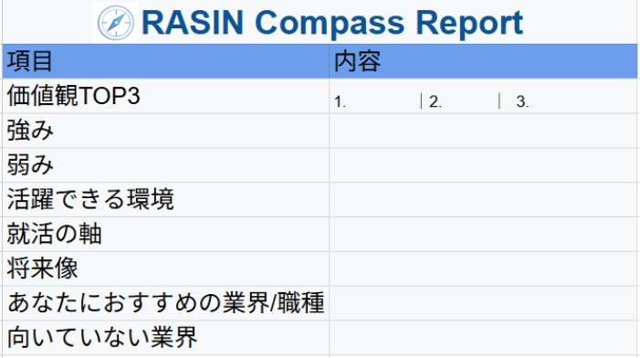

就活生向け 自己理解ブートキャンプ
あなた専用の“キャリアの羅針盤”をつくり
これから進む「就活の方向性」を２週間で明確にする
伴走型プログラム
※オンライン完結／大学1〜4年・大学院生まで参加OK
やりたいことも、向いていることも
よくわからない。
SNSや周りの優秀な人を見て
焦るだけで動けない。
学歴にコンプレックスがあり、
大企業に内定できないかも、、、
就活の軸がなくて
ESや面接で何を話せばいいか迷う。
就活の自己PR・OB訪問・インターン応募・キャリア相談など、 すべての場面でそのまま使える“言語化された自分”が手に入ります。
2週間後に手に入る
“あなただけの自己理解レポート”
18〜25歳の「方向性迷子」のための
就活の方向性がわからない大学生のための
“キャリアの羅針盤づくり”自己理解プログラムです。
RASINは、正解を押し付ける塾ではありません。
「この方向に進めば、自分らしく戦える」という
自分の軸で決められる状態を一緒につくることです。
「自己分析してもよくわからない」
「どの業界が自分に向いているのかわからない」
「とりあえず動いているけど、自信がない」
そんな “就活迷子” を、ゼロにします。
01
やりたいこと探しではなく、
あなたの価値観と強みから
「進むべき方向」を一緒に見つけます。
02
1on1の個別対話で、
本音で話せる・深くまで潜れる環境をつくります。
03
方向性を言語化して終わりではなく、
1〜3ヶ月でできる“小さなチャレンジ”まで
一緒に決めていきます。
▼ コンテンツ
▼ ゴール
Step1の深掘りに必要な“自分の棚卸し”が完了する。
▼ やること
▼ ミニワーク
▼ Step1の成果
自分の向いてる環境がわかる
▼ やること
▼ ミニワーク
▼ Step3の成果
自分の活躍できる環境がわかる
▼ やること
▼ ミニワーク
▼ Step3の成果
自分に合った方向性が1〜2種決まり、やりたいこと（仮）が言えるようになる。
▼ やること
▼ ワーク内容
▼ Step4の成果
自分に合う「業界×職種」が明確になり、選択肢に迷わなくなる。
▼ やること
▼ Step5の成果
自分の方向性と行動指針が言語化され、迷わず動ける状態になる。
2週間集中伴走プログラム
2週間集中・完全伴走プログラム
（全5回セッション＋伴走サポート）
※ 初回オンライン面談までは一切料金はかかりません。
※ 面談後、「今はまだ受けない」と決めてももちろん大丈夫です。
大学3年生
何となく「大企業に行かなきゃ」と思っていたのが、
自分が大事にしたい働き方や価値観がはっきりして、
志望業界自体がガラッと変わりました。
大学1年生
まだ就活は先だと思っていましたが、
方向性が見えたことで「今やるべきこと」が明確になり、
長期インターンへの挑戦を決めました。
まずは公式LINEでつながって、
あなたの今の状況やモヤモヤをお聞きするところからスタートします。
STEP 1
下の「無料相談を利用する」ボタンから
RASIN［公式］LINEを友だち追加します。
STEP 2
自分の状況や悩み、知りたいことを
簡単なフォームでお送りいただきます。
STEP 3
オンラインで1対1の無料相談。
モヤモヤの整理と、今後の方向性の仮説を一緒に考えます。
STEP 4
ご希望の方のみ、有料プログラムへ。
1 on 1体制で2週間、本気で自己理解を深めていきます。
※初回面談までは完全無料です。
無理な勧誘は一切ありません。
まったく問題ありません。過去の出来事を一緒に振り返るところから始めるので、 「何もやってこなかった」と感じている方でも参加できます。
週2回のセッション（約90分）と短時間のワークが中心です。 個別相談の時間帯も柔軟に調整します。
弊社サービスの"自己理解検定"で自分の理解度レベルをチェック✅
＼ まずは、LINEで気軽に話してみませんか？ ／
「自分の方向性がわからない」「話を聞いてから決めたい」という方のために、
RASIN公式LINEから、無料オンライン相談を行っています。
※ 各月先着〇名様まで／定員になり次第受付終了